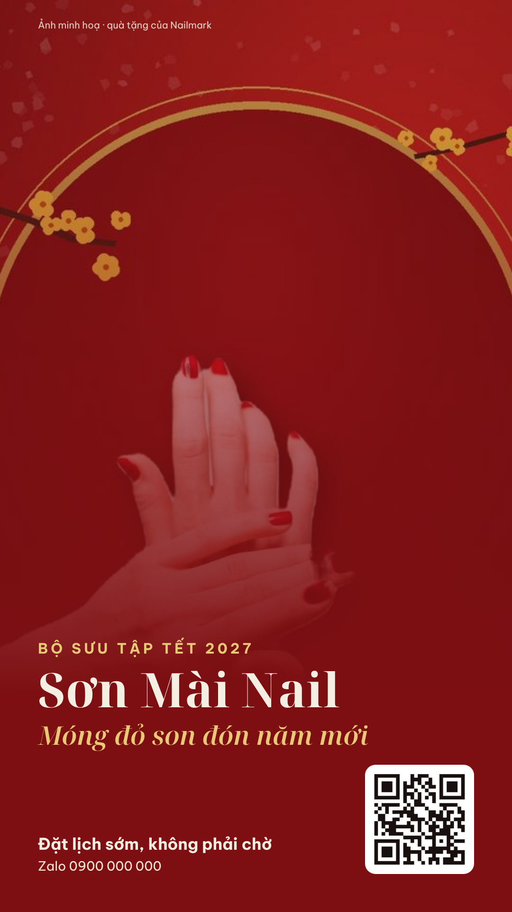
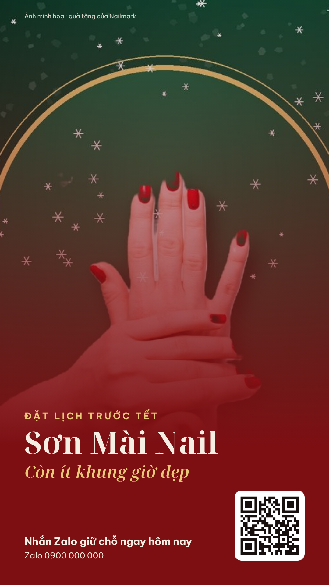
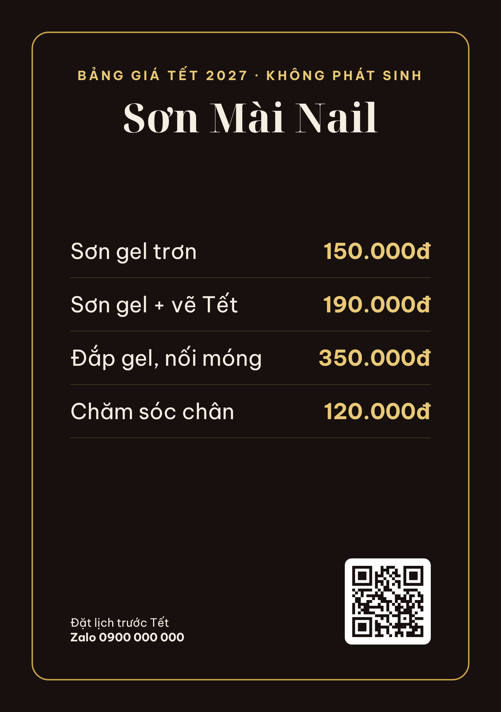
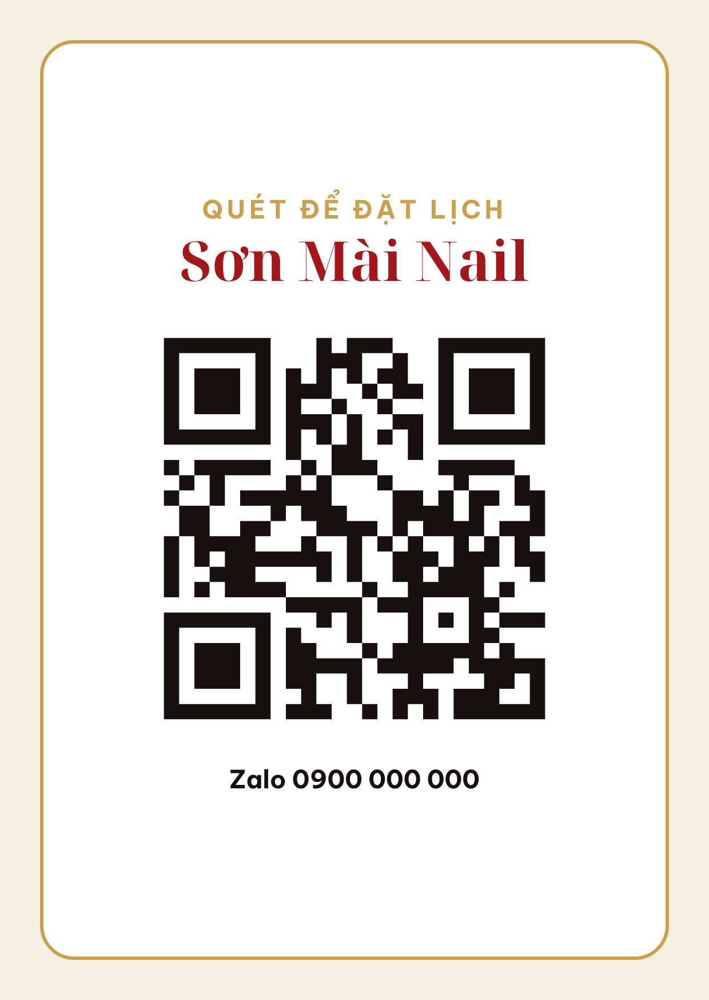
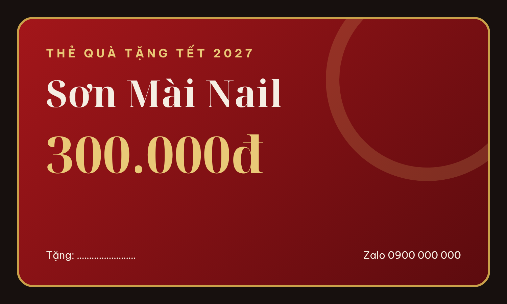
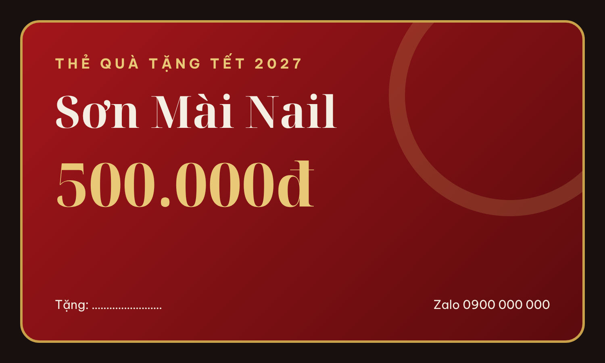

Nailmark cảm ơn chị đã tin tưởng. Toàn bộ 10 ảnh và 10 câu đăng bài bên dưới là của tiệm, dùng ngay, không cần làm gì thêm.
Tải trọn bộ (.zip)





Có web đặt lịch riêng để khách chọn mẫu và nhắn Zalo: gói Khởi đầu 999.000đ. Nhập mã KHAUTRU99 để trừ 99.000đ đã trả, chỉ còn 900.000đ.
Giới thiệu một tiệm bạn: tiệm bạn nhận bộ quà miễn phí, chị được cảm ơn bằng một bộ ảnh mùa lễ kế tiếp.